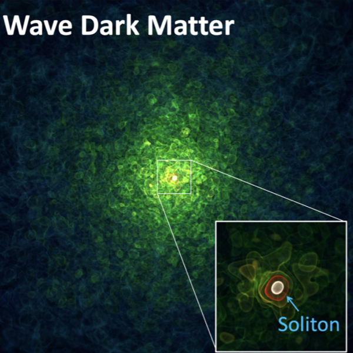
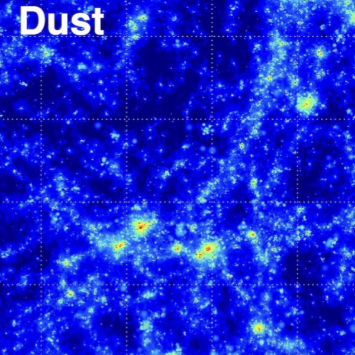
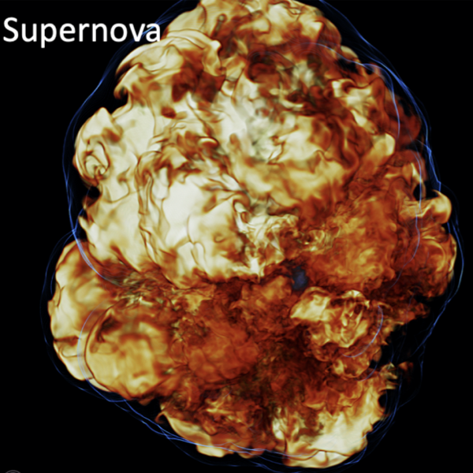
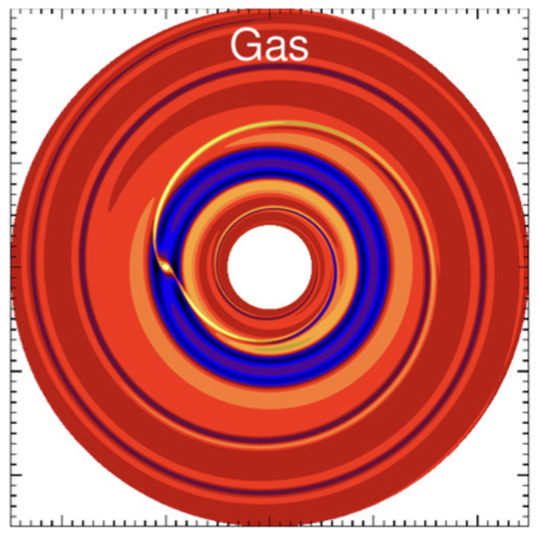

We will focus on the comparison between the conventional cold dark matter (CDM) and the emerging wave/fuzzy dark matter (ψDM). The latter has become increasingly more popular since it has the potential to solve the small-scale controversies of CDM while retaining the same large-scale structure. ψDM can originate from non-QCD axions with extremely small particle masses, ~10-22 eV, and thus is in Bose-Einstein condensation. Such non-QCD axions, dubbed axion-like bosons, can be one of the low-energy manifestations of String theory.
In 2014, our group at NTU (HY Schive and Prof. Tzihong Chiueh) crystallized the ψDM model with two landmark papers that created potential links with observations, receiving 420 and 216 google scholar citations respectively as of today. These two papers discovered (a) stable 3D solitons naturally arising from cosmological ψDM perturbations and (b) their relations to the observable dark matter halos. Since then, we have been focusing on various predictions of ψDM in connection with observations, such as dwarf galaxies, reionization, Lyman-α forest, and gravitational lensing. Most recently, our work using ancient central star clusters in ultrafaint dwarf galaxies to constrain ψDM has been published in Phys. Rev. Lett. Clearly, the NTU team has been at the forefront of this field, with competitions mainly from the Princeton group, Columbia group, and Gottingen group.
Collaboration promoted by our TCA group is key to stimulating groundbreaking progress in ψDM, especially because of the necessity to incorporate baryonic physics into the simulations. For example, studying the 21-cm intensity map and Lyman-α forest power spectra in the post-reionization era can provide a powerful tool for distinguishing different dark matter models by probing their small-scale structure, for which a direct comparison with CDM simulations (A. Cooper) will be essential. Comparing the formation of the first stars and the assembly history of the first galaxies between the ψDM and CDM scenarios (KJ Chen) can shed light on the cosmic phase transition of the early universe after the Big Bang and predict useful observational signatures for the forthcoming telescopes.
Galaxy formation theorists study a complex network of astrophysical processes, from the evolution of the cosmic web of dark matter across the 14 billion-year history of the cosmos to the nuclear reactions that govern the life and death of individual stars. In the 2020s, the emphasis is shifting towards sub-galactic scales. For example, modeling efforts that bring together specialists in star formation and interstellar medium (ISM) may finally allow the stellar initial mass function to be understood from first principles. That progress would open up a new era of galactic chemical evolution models in which the ISM can be simulated self-consistently in realistic galactic environments, evolving over cosmic time. Those improvements will be essential as galaxy formation theories are facing a deluge of data on the horizon from new observations such as JWST. The deeper understanding of the “baryon cycle” from such simulations would, in turn, eliminate the presently intractable limit on small-scale tests of the nature of dark matter and the formation of the very first stars and galaxies.
Another major unresolved problem in galaxy formation is the roles of energetic feedback from stars and supermassive black holes (SMBHs). For example, cosmic rays (CRs) have recently been shown to be a critical ingredient that is missing from previous simulations and could have large impacts on galactic winds driven by stellar feedback as well as relativistic jets from SMBHs. However, the details of CR transport depend on their interactions with the magnetic field on scales orders of magnitude smaller than the sizes of galaxies. Therefore, these processes are not well understood, and modeling them remains numerically challenging.
Energetic feedback from supernovae, the synthesis of chemical elements (in neutron star mergers, supernovae and the cores of massive stars), and the extreme environments of active galactic nuclei are all fundamental questions for the bigger picture of galaxy formation theory. Breakthroughs in this field require developing sophisticated and comprehensive theories, implementing innovative algorithms, and conducting massive simulations, for which the collaboration fostered by NCTS will be invaluable. For example, the current bottleneck of CR physics is that the simulations are very computationally expensive, which could be overcome by exploiting the GPU-accelerated algorithms in GAMER. In addition, due to the similarities between the numerical methods involved in the CR physics and neutrino physics, the code optimizations will be benefited from the collegial efforts among HY Yang, KJ Chen, and KC Pan. Last but not least, the physical insights gained from the simulations incorporating microscopic physical processes will be an important input for the semi-analytical galaxy formation models as developed by A. Cooper.
Compact objects and energetic astrophysical phenomena. including supernovae, mergers of compact objects, gamma-ray bursts, pulsars/magnetars, active galactic nuclei, tidal disruption events, and perhaps fast radio bursts, will remain the primary sources of multimessenger astronomy in the next decade. Future detections of EM, GW, and neutrinos are expected to shed light on the as-yet-unknown mechanisms of different classes of supernova explosion, the origin of elements, the properties of dense matter, and the accelerated expansion of the Universe ascribed to dark energy. These data also have important implications for particle physics, including the properties of neutrinos, the origin of ultra-high-energy cosmic rays, and the nature of dark matter.
Among these, core-collapse supernova (CCSN) plays an important role in forming stellar-mass black holes and neutron stars, which is essential for the multimessenger and gravitational wave astronomy. To model CCSN, we plan to port the essential physics modules, originally implemented by KC Pan on the AMR code FLASH, to GAMER, including the Isotropic Diffusion Source Approximation (IDSA) method for three-species neutrino radiation transport, a general relativistic potential solver, and a generalized tabulated equation of state solver for nuclear matter. By leveraging the exceedingly high performance of GAMER, we will study the long-term evolution after core bounce (up to a few seconds) to facilitate the study of stellar-mass black hole formation. Furthermore, we will incorporate magnetohydrodynamics (MHD) to resolve the magnetorotational instability in the shocked region with an unprecedentedly high resolution of ~50 m to study the role of magnetic field on shock revival and multimessenger signals. Meanwhile, further improvement on accurate description of neutrino interaction with dense matter and their flavor oscillations can be pivotal (KC Pan and MR Wu). These developments can also be readily used to study other compact object phenomena such as the evolution of neutron star merger remnants in parallel. Combination with the subsequent long-term evolution of explosion ejecta, together with the nucleosynthesis calculations, essential for the modeling of the electromagnetic emission, can be further carried out (KJ Chen and MR Wu).
The recent release of the first image of black holes by the Event Horizon Telescope collaboration (EHTC) opens a new chapter for exploring black hole physics in the strong gravity regime. To study electromagnetic signals, such as spectra and image features, from combined effect from accretion and jet environment in the vicinity of black holes, massive computation for radiative transfer is required. To this end, Odyssey, a GPU based general relativistic radiative transfer toolkit, has been developed by our NTNU team and applied in the EHTC. The radiative transfer module in Odyssey is also adjustable for flat spacetime cases, including the polarization computations. Therefore, it can be a powerful tool for post-processing the dynamic simulation data of GAMER to extract electromagnetic imprints and bridge the models and observations.
The just-finished third joined observation (O3a) of Advanced LIGO and Advanced Virgo recorded 56 gravitational wave candidate events in 6 months, which is about three times more than the sum of the previous two joined observations (O1 and O2). The KAGRA gravitational wave detector, which involves several major Taiwanese institutes, joined O3 in the late phase. The newly established LIGO-Virgo-KAGRA network could significantly enhance the sensitivity, polarization, and localization of gravitational wave events. Therefore, theoretical and computational efforts on improving the gravitational wave template modeling through numerical general relativity calculations (HJ Yo, FL Lin, KC Pan) and data analysis search pipelines (A Kong, FL Lin) are urgent tasks for analyzing O3GK data and future O4.
Planet/Star Formation (MK Lin, YN Lee)
Planets and stars are the building blocks of the Universe. Observations such as ALMA and Herschel continue to demonstrate the ubiquity of planetary systems and the complexity of protoplanetary disks — the birth sites of planets, and to reveal complex structures within the interstellar medium and the later phases of star-disk system formation. Many key questions remain to be answered in this field: Why are planets so common? How do tiny dust grains evolve from micron sizes to protoplanets that are thousands of km in radius? How do planets affect a protoplanetary disk’s observed morphology and, conversely, how do protoplanetary disks shape the architecture of planetary systems? How do moons form? How is star formation related to the gravo-turbulent structure of the interstellar medium? How and when is the stellar mass determined? How does stellar feedback interact with the environment and affect the large-scale structures or the next generation of star formation? Do the dynamical properties of the prestellar core leave an imprint on the protoplanetary disk that forms within?
In view of both the quantity and quality of future observations in this field, there is an ever-increasing demand for ever-more sophisticated theoretical models to explain observations. Such models are intrinsically multi-physics and multi-scale problems involving turbulent hydrodynamics, gravity, chemistry, radiation, dust grains, magnetic fields, CRs, etc., for which computer simulations with multidisciplinary collaboration are critical. In this respect, collaboration with the new TCA group in NCTS is the ideal strategy towards building state-of-the-art models. First, the group provides unparalleled expertise in GPU computing (HY Schive), which will likely dominate the future of computational astrophysics. Secondly, the broad scientific background of the group members will allow us to transcend the traditional boundaries of planet and star formation, for example by connecting it to energetic compact objects (KC Pan, KJ Chen), CRs (HY Yang), and galaxy evolution (A. Cooper). These unique advantages will lead to world-class results that will raise the international profile of astrophysical research in Taiwan.
Software Development and Resource Sharing (All members)
 We propose to use GAMER as our major computational framework for collaboration. It supports hybrid OpenMP/MPI/GPU parallelism and has excellent parallel scalings up to thousands of GPUs and tens of thousands of CPU cores. Furthermore, it provides a unified CPU/GPU interface that allows for implementing new functionality without the need to write CPU and GPU codes separately, which significantly lowers the barrier of code development. The code supports a variety of physics modules, including (non-)relativistic hydrodynamics, MHD, self-gravity, particles, chemistry, radiative cooling, and ψDM. By combining the expertise in this TCA group, we will further incorporate many new modules including non-ideal hydrodynamics and MHD, stellar and black hole feedback, CRs, star formation and sink particles, nuclear equation of state and neutrino transport, and dust. The fact that each module may be applied to multiple applications reinforces the significance of forming this TCA group since it will greatly minimize the software development effort and foster a world-leading simulation platform in Taiwan.
We propose to use GAMER as our major computational framework for collaboration. It supports hybrid OpenMP/MPI/GPU parallelism and has excellent parallel scalings up to thousands of GPUs and tens of thousands of CPU cores. Furthermore, it provides a unified CPU/GPU interface that allows for implementing new functionality without the need to write CPU and GPU codes separately, which significantly lowers the barrier of code development. The code supports a variety of physics modules, including (non-)relativistic hydrodynamics, MHD, self-gravity, particles, chemistry, radiative cooling, and ψDM. By combining the expertise in this TCA group, we will further incorporate many new modules including non-ideal hydrodynamics and MHD, stellar and black hole feedback, CRs, star formation and sink particles, nuclear equation of state and neutrino transport, and dust. The fact that each module may be applied to multiple applications reinforces the significance of forming this TCA group since it will greatly minimize the software development effort and foster a world-leading simulation platform in Taiwan.
Sharing computational resources among the TCA group members is critical given the limited resources in Taiwan. First, we will submit a joint MOST proposal to secure a significant amount of allocation on TAIWANIA 2 dedicated to the entire TCA group. Meanwhile, we will explore ways to make our in-house HPC resources, for example, the CICA cluster at NTHU, the Eureka GPU cluster at NTU, the TIARA cluster at ASIAA, the cluster at NTNU, and the clusters at ASIoP, available to each member. Data sharing (both within the TCA group and internationally) is also of great importance. It will not only maximize the impact of our rich simulation datasets but also promote scientific reproducibility and fidelity. We plan to first utilize yt hub, a public data hub facilitating open-source data sharing, and then, when necessary, propose an even larger data hub hosted by NCHC for the entire astronomical community in Taiwan.
 The Theoretical and Computational Astrophysics (TCA) Thematic Group (TG) at the National Center for Theoretical Sciences (NCTS) is a newly established initiative to foster the growth of theoretical astrophysics research in Taiwan. The TCA brings together expertise ranging from cosmology to planet formation from various institutions in Taiwan to provide a platform for collaborations, sharing resources, and training of next-generation theoretical astrophysicists. The group also supports independent junior researchers through the NCTS Postdoctoral Research Scholar program.
The Theoretical and Computational Astrophysics (TCA) Thematic Group (TG) at the National Center for Theoretical Sciences (NCTS) is a newly established initiative to foster the growth of theoretical astrophysics research in Taiwan. The TCA brings together expertise ranging from cosmology to planet formation from various institutions in Taiwan to provide a platform for collaborations, sharing resources, and training of next-generation theoretical astrophysicists. The group also supports independent junior researchers through the NCTS Postdoctoral Research Scholar program.